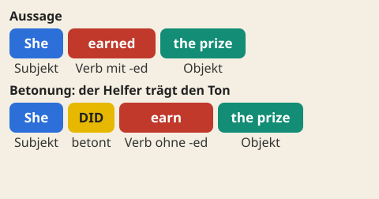

She did win: Betonung mit do
Mit einem KI-Tutor lernen
Ein KI-Tutor erklärt dir diese Seite und hilft dir bei den Aufgaben. Wähl deinen Assistenten:
Mit Claude öffnen Mit ChatGPT öffnen Mit Mistral Vibe öffnen
Du nutzt dein eigenes Konto beim Anbieter. Der Assistent ist kein Angebot von lernapps.net: lernapps liefert nur Inhalte und Aufgaben. Die Wahl gilt für alle Seiten, nur auf diesem Gerät.
Zweifel und Belege
In einem Zeitungsartikel steht der Satz „She did make the discoveries.“ Den Helfer did kennst du aus Fragen und Verneinungen. Beim Lesen klingt er hier lauter als die Wörter um ihn herum.
Aufgabe
Lösung
Es macht aus dem Satz eine Frage.
Eine Frage beginnt mit dem Helfer, wie in Did she make the discoveries? Hier steht she vorn.
Es hebt hervor, dass die Aussage stimmt. richtige Antwort
Der Helfer steht hier nicht für eine Frage oder eine Verneinung. Er verstärkt die Aussage, meist gegen einen Zweifel.
Es verneint den Satz.
Zum Verneinen braucht der Helfer ein not, also did not oder didn't. Hier fehlt es.
Der Helfer kann auch in einer Aussage stehen. Dann verstärkt er sie.
Das kannst du danach: Du verstärkst eine Aussage mit do, does oder did und erkennst solche Sätze in Texten.
Lesestück: Fact check Marie Curie
Lies den Text und achte auf Sätze, in denen did, do oder does direkt vor einem Verb in der Grundform steht und etwas hervorhebt. Ein did mit not verneint nur und hebt nichts hervor.
A. Eine Behauptung
Some people say that Marie Curie was only the wife of a famous scientist. Is that true? Let's look at the facts. Marie was born in Warsaw in 1867. There she studied at a secret university that admitted women, the Flying University. In 1891 she moved to Paris, where she did earn her degrees. In 1895 she married the scientist Pierre Curie.
| Englisch | Deutsch |
|---|---|
| secret | geheim |
| degree | akademischer Abschluss |
| scientist | Wissenschaftler, Wissenschaftlerin |
| admit | zulassen, aufnehmen |
| earn | verdienen, erwerben |
| Flying University | „Fliegende Universität“, eine geheime polnische Hochschule |
B. Was die Daten sagen
Critics often claim that Pierre made all the important discoveries. The records tell a different story. Together the couple studied radioactivity, the rays that some materials send out. In December 1903 the Nobel Prize in Physics went to three people: Pierre Curie, Marie Curie and Henri Becquerel. It was a prize for their joint research on radiation. Marie did share the prize with two men, and she did coin a new word for their field: radioactivity. In 1906 Pierre died in a road accident in Paris. Marie kept working. That year she became the first woman professor at the University of Paris.
| Englisch | Deutsch |
|---|---|
| critic | Kritiker, Kritikerin |
| claim | behaupten |
| joint | gemeinsam |
| research | Forschung |
| radiation | Strahlung |
| couple | Ehepaar |
| discovery | Entdeckung |
| record | Aufzeichnung, Unterlagen |
| field | Fachgebiet |
| send out | aussenden |
| road accident | Verkehrsunfall |
| coin a word | ein Wort neu prägen |
| professor | Professorin, Professor |
C. Das Ergebnis
In 1911 she received a second Nobel Prize, this time in Chemistry, for the discovery of the elements radium and polonium. No person had ever won two Nobel Prizes before. Some people kept doubting her role, but the facts are clear. She did make the discoveries, and she did earn the awards. We do think that the dates speak for themselves. In 1920 she founded the Curie Institute in Paris.
| Englisch | Deutsch |
|---|---|
| chemistry | Chemie |
| discovery | Entdeckung |
| element | chemisches Element |
| doubt | Zweifel, anzweifeln |
| date | Datum, Jahreszahl |
| award | Auszeichnung |
| role | Rolle |
| keep working | weiterarbeiten |
| speak for themselves | für sich sprechen |
| found | gründen (founded: gründete) |
| wife | Ehefrau |
| famous | berühmt |
| ray | Strahl |
| Jahr | Ereignis |
|---|---|
| 1867 | geboren in Warschau |
| 1891 | Umzug nach Paris |
| 1903 | Nobelpreis für Physik |
| 1906 | erste Professorin der Universität Paris |
| 1911 | Nobelpreis für Chemie |
Quelle: Wikipedia (englisch) „Marie Curie“, geöffnet am 24. November 2026. Der Text ist selbst geschrieben und folgt nur den Fakten der Quelle.
Betonung: der Helfer trägt den Ton
Im Lesestück hast du Sätze wie „She did make the discoveries.“ gelesen. Auf der Satzleiste der früheren Kapitel liegen die Karten Subjekt, Verb und Objekt. Der Helfer ist die gelbe Karte. In der betonten Aussage liegt sie direkt vor dem Verb, trägt den Ton, und das Verb steht ohne Endung.

Die betonte Aussage hat eine Karte mehr. Die Vergangenheit liegt jetzt beim Helfer.
Quelle: eigene Zeichnung. Lizenz: CC-BY-4.0.| Normal | Betont |
|---|---|
| I like it. | I do like it. |
| He likes it. | He does like it. |
| We saw it. | We did see it. |
Merke
do, does, did plus Grundform, mit Betonung. Wer zweifelt oder etwas Falsches glaubt, dem widerspricht man so. Geschrieben zeigt man die Betonung oft mit Großbuchstaben oder Kursivschrift (She DID win), gesprochen mit dem Ton. Anders als in der Frage bleibt das Subjekt vorn, und anders als in der Verneinung fehlt das not. Bei be und bei Modalverben (can, will) setzt man kein do ein: Sie sind ihr eigener Helfer und werden einfach betont gesprochen (She IS right.).
Übung
Aufgabe
Lösung
Mit Pierre Curie und Henri Becquerel. richtige Antwort
Im Lesestück steht, dass der Preis an drei Personen ging.
Mit niemandem, sie bekam ihn allein.
Allein bekam sie erst den Preis für Chemie 1911.
Nur mit ihrem Mann Pierre.
Henri Becquerel war auch dabei.
Der Preis von 1903 ging an drei Personen. Der zweite Preis kam 1911.
Aufgabe
Lösung
She did make the discoveries. richtige Antwort
Der Helfer did steht vor dem Verb make und hebt die Aussage hervor.
Marie kept working.
Hier steht kein Helfer. Es ist ein normaler Satz in der Vergangenheit.
She did earn the awards. richtige Antwort
Der Helfer did steht vor dem Verb earn und hebt die Aussage hervor.
In 1895 she married the scientist Pierre Curie.
Das ist ein normaler Aussagesatz ohne Helfer.
Betont sind die Sätze, in denen did direkt vor dem Verb in der Grundform steht und nicht verneint.
Aufgabe
Lösung
Marie kept working. richtige Antwort
Der Satz folgt auf den Tod von Pierre im Jahr 1906. Danach wurde sie Professorin.
In 1906 Pierre died in a road accident in Paris.
Das ist das Ereignis, nicht die Antwort darauf, was Marie danach tat.
Marie did share the prize with two men.
Das sagt etwas über den Preis von 1903, nicht über die Zeit nach 1906.
Der Beleg ist der Satz direkt nach der Nachricht vom Unfall.
Aufgabe
Wähle den Helfer und die Form des Verbs für die betonte Aussage.
Tipp
Schau auf die Zeit und auf die Person. Das Verb steht nach dem Helfer in der Grundform.
- Marie Curie hat den Preis wirklich gewonnen. → Marie Curie … … the prize.
- Er weiß die Antwort wirklich. → He … … the answer.
- Wir lieben diese Geschichte wirklich. → We … … this story.
Lösung
- Marie Curie did win the prize.
- He does know the answer.
- We do love this story.
Aufgabe
Ein Kritiker zweifelt. Widersprich mit einer betonten Aussage.
Tipp
Aus dem Verneinungshelfer wird ein betonter Helfer. Lass das not weg.
- Marie didn't win the prize.
- He doesn't know the facts.
- They didn't come to Paris.
Lösung
- Yes, Marie really did win the prize. (auch richtig: Yes, Marie really did win that prize.; Yes, Marie really did win the Nobel Prize.; Yes, Marie really did win it.; Yes, Marie did win the prize.; Yes, Marie did win that prize.; Yes, Marie did win the Nobel Prize.; Yes, Marie did win it.; Yes, Marie Curie really did win the prize.; Yes, Marie Curie really did win that prize.; Yes, Marie Curie really did win the Nobel Prize.; Yes, Marie Curie really did win it.; Yes, Marie Curie did win the prize.; Yes, Marie Curie did win that prize.; Yes, Marie Curie did win the Nobel Prize.; Yes, Marie Curie did win it.; Yes, She really did win the prize.; Yes, She really did win that prize.; Yes, She really did win the Nobel Prize.; Yes, She really did win it.; Yes, She did win the prize.; Yes, She did win that prize.; Yes, She did win the Nobel Prize.; Yes, She did win it.; Marie really did win the prize.; Marie really did win that prize.; Marie really did win the Nobel Prize.; Marie really did win it.; Marie did win the prize.; Marie did win that prize.; Marie did win the Nobel Prize.; Marie did win it.; Marie Curie really did win the prize.; Marie Curie really did win that prize.; Marie Curie really did win the Nobel Prize.; Marie Curie really did win it.; Marie Curie did win the prize.; Marie Curie did win that prize.; Marie Curie did win the Nobel Prize.; Marie Curie did win it.; She really did win the prize.; She really did win that prize.; She really did win the Nobel Prize.; She really did win it.; She did win the prize.; She did win that prize.; She did win the Nobel Prize.; She did win it.)
- Yes, He really does know the facts. (auch richtig: Yes, He really does know all the facts.; Yes, He really does know the answer.; Yes, He really does know them.; Yes, He does know the facts.; Yes, He does know all the facts.; Yes, He does know the answer.; Yes, He does know them.; Yes, The critic really does know the facts.; Yes, The critic really does know all the facts.; Yes, The critic really does know the answer.; Yes, The critic really does know them.; Yes, The critic does know the facts.; Yes, The critic does know all the facts.; Yes, The critic does know the answer.; Yes, The critic does know them.; He really does know the facts.; He really does know all the facts.; He really does know the answer.; He really does know them.; He does know the facts.; He does know all the facts.; He does know the answer.; He does know them.; The critic really does know the facts.; The critic really does know all the facts.; The critic really does know the answer.; The critic really does know them.; The critic does know the facts.; The critic does know all the facts.; The critic does know the answer.; The critic does know them.)
- Yes, They really did come to Paris. (auch richtig: Yes, They really did come.; Yes, They did come to Paris.; Yes, They did come.; Yes, The Curies really did come to Paris.; Yes, The Curies really did come.; Yes, The Curies did come to Paris.; Yes, The Curies did come.; They really did come to Paris.; They really did come.; They did come to Paris.; They did come.; The Curies really did come to Paris.; The Curies really did come.; The Curies did come to Paris.; The Curies did come.)
Aufgabe
In jedem Satz steckt ein Fehler. Schreibe den Satz richtig. Die Betonung bleibt: do, does oder did bleibt im Satz.
Tipp
Prüfe, ob der Helfer zur Person und zur Zeit passt und ob das Verb ohne Endung steht.
- She does makes great discoveries.
- They did earned the awards.
- He do like the story.
Lösung
- She does make great discoveries.
- They did earn the awards.
- He does like the story.
Aufgabe
Hör zu und schreibe, was du hörst. Der Helfer ist betont: Schreibe ihn mit.
- KI
- KI
- KI
Lösung
- She did love her work.
- Critics do forget one thing.
- He did say that.
Sprechen und schreiben
Aufgabe
Hör zu, sprich nach und nimm dich auf. Vergleiche dann mit dem Original.
Tipp
Hör den Satz zuerst. Sprich dann nach und betone den Helfer, so wie in einer Antwort auf einen Zweifel. Das Wort deserve heißt verdienen. Die Sätze zeigen dir auch, wie du den Leserbrief unten beginnen kannst.
- I do think she deserved it.KI
- We do need more stories like hers.KI
- She did change science.KI
Zum Aufnehmen braucht diese Aufgabe JavaScript. Die Beispiele kannst du auch ohne anhören.
Lösung
- I do think she deserved it.
- We do need more stories like hers.
- She did change science.
Offene Aufgabe
Eine Leserin schreibt an die Zeitung: „Marie Curie was only the wife of a famous scientist.“ Schreibe eine Antwort in drei Sätzen. Mindestens zwei davon verstärken mit do, does oder did eine Tatsache aus dem Lesestück.
Eine gute Antwort enthält:
Lösung
I do think you are wrong. Marie Curie did receive a second Nobel Prize. She did become the first woman professor at the University of Paris.
Wie es weitergeht
Mit dem Helfer kannst du auch einen Satz umdrehen. Auf der nächsten Seite liest du über die Landung auf dem Mond und siehst, wie Wörter wie never den Helfer nach vorn holen.
Fehler gefunden oder eine Idee für diese App?